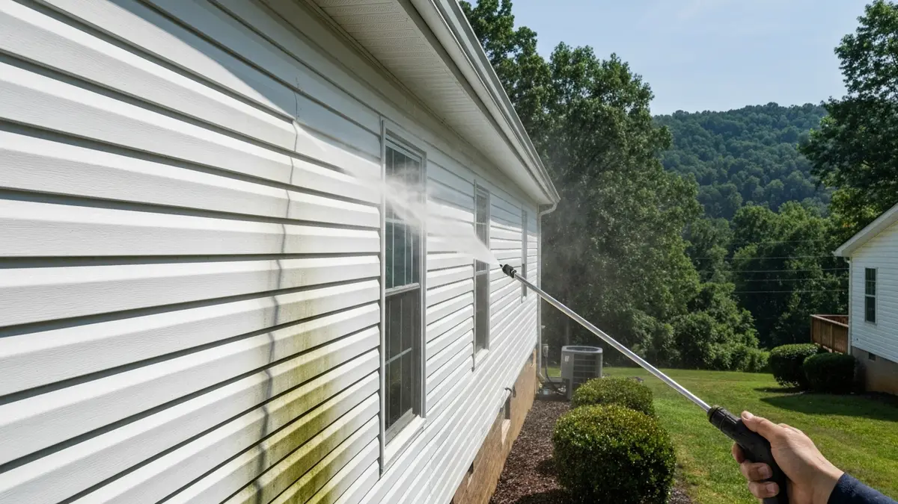

Jefferson City is the seat of Jefferson County, located about 30 miles northeast of Knoxville along the Holston River in the foothills of the Smoky Mountains. The community of about 8,000 residents features historic downtown buildings, University of the Cumberlands' Tennessee campus, and established residential neighborhoods surrounded by East Tennessee's distinctive topography. The region's abundant rainfall, seasonal humidity, and mature tree canopy create ideal conditions for mold, mildew, and algae growth on home exteriors and driveways. Knox Pressure Pros brings professional cleaning services to Jefferson City and surrounding Jefferson County.

Our Jefferson City Pressure Washing Services
- Driveway & Concrete Cleaning — Remove years of oil, grime, and algae from Jefferson City driveways and walkways.
- House Washing — Safe, low-pressure house washing that removes mildew and oxidation without damage.
- Deck & Patio Cleaning — Wood and composite deck restoration for Jefferson City homeowners.
- Roof Soft Wash — Safe roof cleaning that removes black streaks without high-pressure damage.
- Commercial Pressure Washing — Storefront, parking lot, and building exterior cleaning in Jefferson City.

Frequently Asked Questions — Pressure Washing in Jefferson City
Do you serve all of Jefferson County?
We primarily serve Jefferson City and the communities within reasonable driving distance of Knoxville including White Pine, Dandridge, and Morristown. Call us with your specific address and we will confirm service availability.
What surfaces are most commonly cleaned in Jefferson City?
Vinyl and brick siding with mildew staining, concrete driveways with algae growth, wood decks that have greyed from UV exposure and moisture, and roofs with black streaks from Gloeocapsa magma bacteria are our most common Jefferson City services.
How often should Jefferson City homeowners pressure wash?
East Tennessee's rainfall and humidity mean most Jefferson City homes benefit from annual cleaning. Homes with significant tree coverage may need twice-yearly cleaning to prevent mold and algae from taking hold on siding and driveways.
Ready for a Clean Home in Jefferson City?
Free estimates · Licensed & insured · Serving Jefferson City and all of Knox County
📞 (865) 378-8377